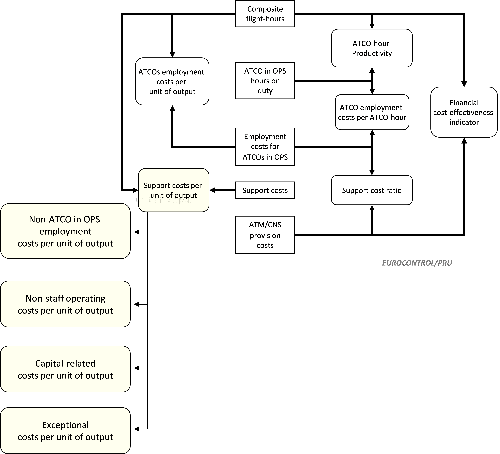

3 Methodological framework used to measure ANSPs gate-to-gate cost-effectiveness performance
3.1 Composite output metric and framework for cost-effectiveness performance analysis
The output measures for ANS provision are, for en-route, the en-route flight-hours controlled1 and, for terminal ANS, the number of IFR airport movements controlled. In addition to those output metrics, it is important to consider a “gate-to-gate” perspective, because the boundaries used to allocate costs between en-route and terminal ANS vary between ANSPs and might introduce a bias in the cost-effectiveness analysis.
For this reason, an indicator combining the two separate output measures for en-route and terminal ANS provision has been calculated. The “composite gate-to-gate flight-hours” are determined by weighting the output measures by their respective average cost of the service for the whole Pan-European system. This average weighting factor is based on the total monetary value of the outputs over the period 2002-2020 and amounts to 0.27.
The composite gate-to-gate flight-hours are consequently defined as:
| Composite gate-to-gate flight-hours = En-route flight-hours + (0.27 x IFR airport movements) |
In the ACE 2001-2006 Reports (Performance Review Unit 2002, 2004, 2005, 2005, 2006, 2007, 2008), two different weighting factors were used to compute ANSPs cost-effectiveness: one for the year under study and another to examine changes in performance across time. As the ACE data sample became larger in terms of years, the difference between these two weighting factors became insignificant. For the sake of simplicity, it was therefore proposed in the ACE 2007 (Performance Review Unit 2009) benchmarking report to use only one weighting factor to analyse ANSPs performance for the year and to examine historical changes in cost-effectiveness.
Although the composite gate-to-gate output metric does not fully reflect all aspects of the complexity of the services provided, it is nevertheless the best metric currently available for the analysis of gate-to-gate cost-effectiveness2.
For the sake of completeness, the gate-to-gate financial cost-effectiveness indicator is broken down into en-route and terminal components, with the output units being en-route flight-hours and IFR airport movements, respectively. There are cases where a high en-route cost per flight-hour correspond to a low terminal cost per IFR airport movement and vice versa.
The PRU has developed an analytical framework that allows cost-effectiveness to be broken down into a number of key components. This framework helps in understanding differences in cost-effectiveness by allowing examination of the detailed factors underlying it. It is important to note that the focus of the ACE analysis is on the ATM/CNS provision costs incurred by the ANSP. MET costs, EUROCONTROL costs and States/NSAs costs are not included as not always under the ANSPs direct management control.

The right-hand side of the Figure 3.1 above shows that the financial cost-effectiveness indicator (ATM/CNS provision costs per composite flight-hour) is made up of three component performance ratios:
Higher ATCO-hour productivity (composite flight-hours per ATCO-hour) improves cost-effectiveness;
Lower ATCO employment costs per ATCO-hour improve cost-effectiveness; and,
All other things being equal, a lower support cost ratio improves cost-effectiveness.
These three ratios multiplied together give the overall financial cost-effectiveness KPI.
The financial cost-effectiveness indicator can also be broken down into two additive factors:
ATCO employment costs per unit of output is the ratio of the employment costs for the ATCOs in OPS to the output (measured in composite flight-hours). All other things being equal, lower ATCOs in OPS employment costs per unit of output will improve financial cost-effectiveness.
Support costs per unit of output is the ratio of support costs to the output. All other things being equal, lower support costs per unit of output will improve financial cost-effectiveness.
The latter indicator is preferred to the support cost ratio for two main reasons. First, the support cost ratio cannot be viewed in isolation since a low ratio may simply be a symptom of high ATCO employment costs. Second, given that there are fixed costs in the provision of ATM/CNS (such as infrastructure and ATM systems), “support costs per unit of output” can give additional insights into the analysis of support costs and scale effects.
3.2 Further methodological considerations on ATCO-hour productivity
The metric of ATCO-hour productivity used in the ACE report is measured as the ratio between composite flight-hours and ATCO in OPS hours on duty. It reflects the average productivity during a year for a given ANSP and does not give an indication of the productivity at peak times which can be substantially higher.
Large differences in ATCO-hour productivity are observed in the ACE analyses. These differences should not be seen in isolation, but together with other indicators such as ATCO employment costs and unit support costs. In addition, many factors contribute to the observed differences in ATCO-hour productivity. Some of these factors can be associated with operational conditions (such as traffic complexity and variability, the type of airspace under the ANSP responsibility or the number of airports operated by the ANSP potentially including low traffic tower operational units), legal and socio-economic conditions (e.g. general labour laws) and institutional issues (e.g. regulatory aspects and governance arrangements).
Other factors as yet unidentified (and not measured) such as the impact of different operational concepts and processes, the operational flexibility, could also affect ATCO productivity performance. There may also be cultural and managerial differences. These elements would deserve additional analysis in order to provide further insight on the differences in ATCO productivity and identify best practices.
Changes in ATCOs in OPS hours on duty could arise from:
Changes in the number of FTE ATCOs in OPS (caused by such factors as newly licensed ATCOs, normal retirement, activation of an early retirement scheme);
Changes in the number of hours on duty, through:
Modification of the contractual working hours following a new labour agreement;
Changes in the number of hours not on duty (for example, through > an increase in average sickness or in refresher training > time); or,
Changes in overtime (where applicable).
In the context of the yearly benchmarking activity, the ACE reports analyse ANSPs’ productivity, both in terms of a cross-section analysis for the year under review and in terms of time series (usually a six-year period). This medium-term perspective is particularly useful for observing changes over time, given the specific characteristics of the ANS industry, which usually requires a certain lead-time to develop ATM systems and infrastructure.
Improvements in ATCO-hour productivity can result from more effective OPS room management and by making a better use of existing resources, for example through the adaptation of rosters (preferably individually-based to enhance flexibility) and shift times, effective management of overtime, and through the adaptation of sector opening times to traffic demand patterns. Similarly, advanced ATM system functionalities and procedures are drivers for productivity improvements.
On the other hand, it is clear that some of the measures implemented by an ANSP to provide extra capacity can have a negative impact on its ATCO-hour productivity performance. This is, for example, the case of a sector split which will allow the ANSP to create additional capacity in its airspace at the expense of more ATCOs or ATCO-hours on duty required to man the additional sector(s).
3.3 Further methodological considerations on support costs
Contrary to ATCO employment costs, support costs encompass a variety of cost items which require specific analysis. There is a general acknowledgement that the Pan-European system has excessive support costs due to its high level of operational, organisational, technical and regulatory fragmentation.
Support costs can be broken down into four separate components that provide further insight into the nature of support costs:
- Employment costs for non-ATCO in OPS staff; these cover ATCOs on other duties, trainees, technical support and administrative staff. These costs can be affected by the following factors:
Outsourcing of non-core activities (such as maintenance of technical equipment, and professional training) could transfer costs from this category to non-staff costs.
Research & development policies may involve ATM systems either being developed in-house, or purchased off-the-shelf. In principle, either solution could lead to the most cost-effective outcome, depending on circumstances; this would depend on whether there were, for example, significant economies of scale, or major transaction costs.
Arrangements relating to the collective agreement and the pension scheme for non-ATCOs in OPS.
- Non-staff operating costs mostly comprise expenses for energy, communications, contracted services, rentals, insurance, and taxes. These costs can be affected by the following factors:
The terms and conditions of contracts for outsourced activities.
Enhancement of the cooperation with other ANSPs to achieve synergies (sharing training of ATCOs, joint maintenance, and other matters).
- Capital-related costs comprising depreciation and financing costs for the capital employed. These costs can be affected by the following factors:
The magnitude of the investment programme.
The accounting life of the assets.
The degree to which assets are owned or rented.
- Exceptional costs, which typically represent a very small proportion of support costs.
There are significant differences in the composition of support costs amongst the 38 ANSPs, and in particular in the proportion of employment costs and non-staff operating costs. The choice between providing some important operational support functions internally or externally has clearly an impact on the proportion of support costs that is classified as employment costs, non-staff operating costs, or capital-related costs. In some cases, the maintenance of ATM systems is outsourced and the corresponding costs are reported as non-staff operating costs. For other ANSPs, these activities are rather carried out by internal staff and the related costs appear as employment costs or as capital-related costs when, according to IFRS, the employment costs of staff working on R&D projects can be capitalised in the balance-sheet.
Employment costs are typically subject to complex bargaining agreements between ANSPs management and staff which usually are embedded into a collective agreement. The duration of the collective agreement, the terms and methods for renegotiation greatly vary across ANSPs. In some cases salary conditions are negotiated every year. High ATCO employment costs may be compensated for by high productivity. Therefore, in the context of staff planning and contract renegotiation, it is important for ANSPs to manage ATCOs employment costs effectively and to set quantitative objectives for ATCO productivity while providing sufficient capacity in order to minimise ATFM delays.
Controlled flight-hours are calculated by the Network Manager (NM) as the difference between the exit time and entry time of any given flight in the controlled airspace of an operational unit. Three types of flight-hours are currently computed by the NM (filed model, regulated model and current model). The data used for the cost-effectiveness analysis is based on the current model (Model 3 or CFTM) and includes flight-hours controlled in the ACC, APP and FIS operational units which are described in the NM environment.↩︎
Further details on the theoretical background to producing composite indicators can be found in a working paper on “Total Factor Productivity of European ANSPs: basic concepts and application” (Sept. 2005) (Performance Review Commission 2005).↩︎